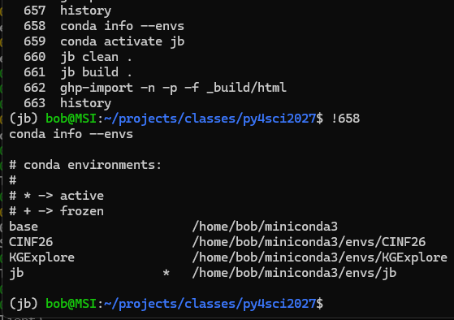
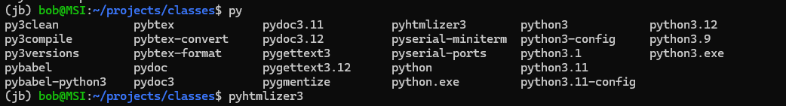

1.2 Setting Up Your Computer#
1.2.1 Preparing Your Computer#
Scientific Python relies on more than the Python programming language. Throughout this course, we will use a terminal to install software, manage Python environments, organize scientific projects, and interact with tools such as Git and JupyterLab.
Before installing Python, we need to establish a computing environment that supports these activities. Windows and macOS handle this differently, but both can provide access to the Unix-style command-line tools commonly used in scientific computing.
Windows users will install the Windows Subsystem for Linux (WSL), which allows Ubuntu Linux to run alongside Windows without requiring a separate computer or traditional virtual machine. macOS users already have a Unix-based operating system and can access the necessary tools through the built-in Terminal application.
After completing the operating-system-specific instructions, everyone will work through the same introductory Unix command-line activities. You will learn how to navigate directories, manage files, and execute commands from a terminal.
Learning Objectives#
By the end of Section 1.2, you should be able to:
Open a Unix-like terminal on your computer.
Identify your home directory and navigate the file system.
Create and manage directories and files using basic shell commands.
Distinguish between your operating system, terminal, and shell.
Prepare your computer for installing Miniconda in Section 1.3.
Note: You do not need to install Python, Miniconda, or JupyterLab yet. We will install and configure those tools in the following sections.
1.2.2 Windows Users: Installing WSL and Ubuntu#
Windows users will install the Windows Subsystem for Linux (WSL), which allows you to run Ubuntu Linux directly within Windows. Ubuntu is a Linux distribution that provides the Unix command-line tools we will use throughout this course.
WSL allows us to use a Linux computing environment without replacing Windows or installing a separate operating system alongside it. We will use WSL 2, the current default version for new installations.
Computer Requirements#
Before installing WSL, check that your computer meets the following requirements.
Component |
Requirements and Recommendations |
|---|---|
Operating System |
Windows 11 recommended; Windows 10 version 2004 (Build 19041) or later supports the installation command, although Windows 10 has reached the end of standard support |
Processor |
Modern 64-bit processor with hardware virtualization support |
Memory (RAM) |
8 GB recommended minimum for this course; 16 GB preferred |
Storage |
At least 20 GB of available disk space recommended |
Internet |
Required for downloading Ubuntu and other software |
Administrator Access |
Needed to enable WSL and install its Windows components |
Most modern Windows laptops should be able to run WSL 2. However, older computers and university-managed computers may have restrictions that prevent installation.
To check your Windows version, press Windows + R, type winver, and press Enter.
To check your installed memory, open Settings → System → About.
If your computer does not meet these recommendations, contact your instructor before purchasing or changing any hardware.
Step 1: Open PowerShell as Administrator#
Open the Windows Start menu.
Type
PowerShellin the search box.Right-click Windows PowerShell and select Run as administrator.
If Windows asks whether you want to allow the application to make changes to your device, select Yes.
You should now see a PowerShell window.
Step 2: Install WSL and Ubuntu#
Enter the following command into PowerShell:
wsl --install
This command enables the required Windows components, installs WSL 2, and downloads Ubuntu Linux.
Follow any instructions that appear on the screen. You may need to restart your computer to complete the installation.
For additional information, see Microsoft’s official WSL installation instructions.
Step 3: Set Up Ubuntu#
After installation, open the Windows Start menu, search for Ubuntu, and launch it.
The first time Ubuntu starts, you will be asked to create a Linux username and password.
Choose a username, preferably using lowercase letters without spaces.
Create a password that you can remember.
When entering your password, no characters will appear on the screen. This is normal in Linux.
Your Linux username and password are separate from your Windows credentials. You will use the Linux password when performing certain administrative tasks within Ubuntu.
Once setup is complete, you should see a Linux command prompt similar to:
student@computer:~$
The exact text will depend on your username and computer.
Step 4: Verify Your Installation#
Return to Windows PowerShell and enter:
wsl --list --verbose
You should see output similar to:
NAME STATE VERSION
* Ubuntu Running 2
The important part is that Ubuntu appears in the list and its version is 2. The state may be Running or Stopped, depending on whether Ubuntu is currently open.
You can now close PowerShell and return to your Ubuntu terminal.
In Section 1.2.4, after our macOS users have opened their terminals, we will begin exploring the Unix file system and learning basic command-line operations.
Troubleshooting#
If installation fails, consult Microsoft’s WSL troubleshooting guide.
Common problems include disabled hardware virtualization, outdated Windows installations, or insufficient administrative permissions. If you encounter an error, record the error message and contact your instructor rather than attempting extensive system modifications.
1.2.3 macOS Users: Opening Terminal#
Unlike Windows, macOS is already a Unix-based operating system. This means Mac users do not need to install Ubuntu or the Windows Subsystem for Linux (WSL). Instead, we will use the Terminal application included with macOS.
Terminal provides a command-line interface that allows you to interact directly with your operating system, navigate directories, manage files, and execute programs.
Computer Requirements#
Most modern Mac computers are suitable for this course. We recommend the following:
Component |
Recommendation |
|---|---|
Operating System |
A currently supported version of macOS |
Processor |
Apple Silicon (M-series) or Intel |
Memory (RAM) |
8 GB minimum recommended; 16 GB preferred |
Storage |
At least 20 GB of available disk space |
Internet |
Required for downloading course software |
Both Apple Silicon and Intel-based Macs can run the software used in this course, although installation packages may differ depending on the processor.
To check your computer’s specifications, open the Apple menu → About This Mac.
Step 1: Open Terminal#
Press Command (⌘) + Space to open Spotlight Search.
Type
Terminal.Press Return to launch the Terminal application.
Alternatively, you can find Terminal under Applications → Utilities → Terminal.
You should see a window containing a command prompt similar to:
student@MacBook ~ %
The exact appearance will depend on your computer’s configuration.
The prompt indicates that Terminal is ready to accept commands.
Step 2: Identify Your Shell#
A shell is a program that interprets commands entered into a terminal.
Modern versions of macOS use a shell called Zsh (Z shell) by default, while Ubuntu generally uses Bash (Bourne Again Shell).
To identify your default shell, enter the following command:
echo $SHELL
On most Macs, the output will be:
/bin/zsh
Both Zsh and Bash support the Unix commands we will use in this course, so there is no need to change your default shell.
Step 3: Verify Your Unix Environment#
Enter the following command:
pwd
This stands for print working directory and displays your current location in the file system.
You should see something similar to:
/Users/student
This is your home directory, where your personal files and folders are stored.
Next, enter:
uname -s
This identifies the operating system’s kernel. On macOS, the output should be:
Darwin
Darwin is the Unix-based foundation of macOS.
You do not need to install Python, Miniconda, Git, or JupyterLab at this point. We will introduce those tools in subsequent sections.
For additional information, see Apple’s Terminal User Guide.
1.2.4 Getting Comfortable with the Terminal#
You now have access to a Unix-like terminal, either through Ubuntu (WSL) or macOS Terminal. Throughout this course, we will use the terminal to install software, create and manage Python environments, work with GitHub repositories, and launch JupyterLab.
Although we will do most of our Python programming in JupyterLab, it is important to become comfortable entering commands in a terminal. You do not need to become a Unix expert, but you should understand how to control your computing environment.
The Command Prompt#
When you open your terminal, you will see a command prompt indicating that the shell is ready to accept a command.
For example, an Ubuntu prompt might look like:
student@computer:~$
The prompt typically contains information about your username, computer, and current directory.
The $ indicates that you are working as a regular user. Your prompt may look different depending on your operating system and shell.
When you type a command and press Enter, the shell executes it. Once the command finishes, a new prompt generally appears, indicating that the terminal is ready for another command.
Try entering:
echo "Hello, Python for Science!"
The command echo displays text in the terminal. You should see:
Hello, Python for Science!
Recalling and Editing Commands#
You do not need to retype commands every time you use them. The shell provides several keyboard shortcuts to make working in the terminal easier.
Key or Command |
Action |
|---|---|
Up Arrow (↑) |
Recall the previous command |
Down Arrow (↓) |
Move forward through previously recalled commands |
Left / Right Arrows |
Move the cursor within a command |
Tab |
Autocomplete a command or file name when possible |
Ctrl + C |
Interrupt a running command |
Ctrl + L |
Clear the visible terminal screen |
|
Display previously entered commands |
|
Clear the terminal screen |
For example, enter:
echo "Scientific Python"
Now press the Up Arrow. The command you just entered should reappear. You can edit it or press Enter to execute it again.
Reusing Commands with Terminal History#
As you work in the terminal, you will often find yourself repeating commands. Rather than typing the same commands over and over, the shell maintains a command history that allows you to retrieve and reuse commands you previously entered.
You can access this history in several ways:
Up Arrow (↑): Displays the previous command. Press it repeatedly to move backward through earlier commands. The Down Arrow (↓) moves forward through the history.
history: Displays a numbered list of previously entered commands.!number: Executes the command associated with that history number.
For example, the following screenshot shows the command history from a Bash terminal running Ubuntu under WSL. Notice that command 658 is:
conda info --envs
Rather than typing that command again, we can enter:
!658

Bash retrieves command 658 from its history and executes it. In this example, the command lists the Conda environments installed on the computer and identifies the currently active environment with an asterisk (*).
This is particularly useful when working with long commands that would be inconvenient to retype.
A word of caution: The !number syntax executes the selected command immediately, so be sure you know what the command does before using it. If you would rather inspect or edit the command first, you can retrieve it using the Up Arrow key or search for it with Ctrl+R.
Command history is maintained by the shell. In Bash, recent commands are held in memory during a terminal session and are normally saved to a history file (typically ~/.bash_history) when the shell exits. Separate terminal sessions may have their own in-memory histories, so commands entered in one terminal may not immediately appear in another.
Next, enter:
history
This displays a numbered list of commands you have previously entered. Your shell generally remembers commands between terminal sessions.
Tip: Recalling and editing commands is particularly useful when installing software or managing Python environments, where commands can be lengthy.
Using Tab Completion#
The Tab key can automatically complete commands, file names, and directory names. It can also help you discover available commands when you are unsure of their exact names.
For example, type the following without pressing Enter:
py
Now press Tab. Because several commands begin with py, the shell cannot determine which one you want. In the Bash shell used by Ubuntu, pressing Tab a second time typically displays a list of possible completions, as shown in the image below.

Notice that the list includes several Python-related commands, including python, python3, and pyhtmlizer3.
If we want to run pyhtmlizer3, we can type the next letter, h, so the command becomes:
pyh
Pressing Tab again completes the command to:
pyhtmlizer3
This illustrates two useful behaviors of Tab completion:
When a unique completion exists, pressing Tab can finish the command automatically.
When multiple completions exist, pressing Tab twice can display the available options, allowing you to type additional characters to narrow the choices.
Tab completion also works with file and directory names, making it especially useful when navigating long directory paths or working with scientific data files.
Tip: Tab completion does not execute a command. You must press Enter to run it. This makes Tab a useful way to explore available commands without actually running them.
Your Home Directory#
Unix organizes files and directories into a hierarchical structure called a directory tree. At the top is the root directory (/), with other directories located beneath it.
Every user has a home directory, where personal files and projects are stored.
Unix uses the tilde (~) as a shortcut for your home directory.
To see your current working directory, enter:
pwd
The command pwd stands for print working directory.
To return to your home directory, enter:
cd ~
We will explore directories and file paths in greater detail after downloading the course materials from GitHub. At that point, we will have actual scientific projects, notebooks, and data files to navigate.
When Something Goes Wrong#
Occasionally, you may enter a command incorrectly or encounter an error message. This is a normal part of working with a terminal.
If a command is running and you need to interrupt it, press:
Ctrl + C
If you simply want to clear the terminal screen, enter:
clear
Clearing the screen does not delete files or undo previously executed commands.
Important: Do not enter commands you do not understand, particularly commands involving sudo, which can grant administrative privileges. If you encounter an unfamiliar error, read the message before attempting to fix it.
Next: Installing Miniconda
In Section 1.3, we will install Miniconda, a package and environment management system. We will use it to create isolated Python environments, install JupyterLab, and manage the scientific packages needed for this course.
Terminal Best Practices#
As you begin working with Python, Miniconda, and JupyterLab, a few habits will make your computing environment easier to manage.
1. You can open more than one terminal.
Each terminal operates independently. You can run JupyterLab in one terminal while using another to examine files or manage Python environments.
For example, you might have:
Terminal 1: Running JupyterLab.
Terminal 2: Installing packages or checking a Conda environment.
You can open additional Ubuntu terminals through Windows Terminal or the Start menu, and additional macOS terminals through Terminal’s Shell → New Window or New Tab menu.
2. Your command history is normally saved automatically.
The shell remembers commands you have entered. You can recall them with the Up Arrow or display them using:
history
In Ubuntu’s Bash shell, command history is normally stored in a hidden file called .bash_history in your home directory.
When you close a terminal normally, Bash generally saves its history. You do not need to type exit every time, although doing so is a reliable way to close a shell session.
If multiple terminals are open, each maintains its own command history. Commands entered in one terminal may not immediately appear in another terminal’s history.
3. Each terminal has its own working directory and active environment.
When you change directories or activate a Conda environment in one terminal, other terminals are not automatically affected.
Later in this course, we will use commands such as:
conda activate jbenv
This activates a Python environment in the current terminal session only.
4. Be aware of programs that continue running.
Some commands finish immediately and return you to the command prompt. Others launch programs that continue running.
For example, when we launch JupyterLab using:
jupyter lab
the terminal will remain occupied while the JupyterLab server is running. This is normal.
You can open another terminal to execute additional commands.
When you are finished using JupyterLab, you can stop its server by returning to the terminal where it is running and pressing Ctrl+C, then confirming shutdown if prompted.
5. Close terminal sessions when you finish working.
To close a shell session, enter:
exit
You can also close the terminal window. Before doing so, make sure you are not interrupting an installation or another program that is still running.
These simple practices will help you manage your Python computing environment without needing to become an expert in Unix administration.